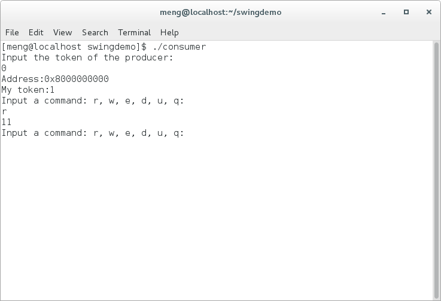

This work is published at ADMS 2016. You can download the paper HERE
SWING is a novel inter-process data sharing mechanism. To share data using SWING, one only needs to establish a mapping from the physical memory of the sender to the virtual memory space of the receiver, rather than transmitting data physically. Processes never need to deal with data synchronization, which is handled by a copy-on-write facility of the operating system.
The Data Sharing Model of SWING
The data sharing model of SWING is illustrated in the figure above. Processes A and B are two applications. They both transmit copies of their data to Process C, which performs data integration and data cleansing. After the work, Process C transmits its copies of data, with its modification, to the Processes D and E, which are responsible for conducting data analysis. It is just like transmitting physical copies of data. After the data sharing, all processes can work on their own copies of data independently.
The same effect can be achieved by FIFO (a.k.a. named pipe) and socket. However, FIFO and socket are too slow, as they have to move data physically. By contrast, the SWING method does not replicate or move data physically. It just maps the physical memory space containing the data to the virtual memory space of the target processes. The actual replication is delayed to the time when a process attempts to modify a block of the data — upon modification, a copy-on-write operation is invoked and a new version of the data block is created. In typical data processing scenarios, write operations are much less frequent than read operations. Therefore, the overhead of data replication can be minimized through SWING.
You may ask how is SWING different from shared memory, since shared memory does not copy data physically either. An advantage offered by SWING is that it alleviates your work in dealing with data synchronization. Normally, an operating system offers two modes to access shared memory. In shared mode, a process’ writes to the shared memory are completely visible to others. In private mode, a process’ writes to the shared memory are only visible to itself — once it attempts to write to the shared memory, copy-on-write operations will be invoked to hide the write from other processes. To transmit data using shared memory, the sending process has to choose the shared mode, while the receiving process can choose the private mode. In this setting, the sender’s writes on the shared memory are constantly visible to the receiver. If the receiver wants a consistent snapshot of the data, concurrency control is required, to prevent the sender from further updating the snapshot. If we use SWING, after the transmission of data, the sender’ updates are no longer visible to the receiver. Thus, synchronization is not required.
SWING is extremely fast. It allows you to transmit data in milliseconds, no matter how big the data is. It allows the processes involved in data transmission to be loosely coupled, as they do not need to deal with data synchronization or concurrency control.
The APIs
You can interact with the SWING mechanism through five system calls.
int createarea(void **address, int *token, unsigned long length )
A process uses this function to apply for a COW memory area. Data located in the COW memory area can be shared to other processes. The input parameter length indicates the size of the COW memory. The returned token is a unique identifier in the whole system to identify the COW memory area. It works as a file descriptor of shared memory. The returned address is the start address of the COW memory area. As the size of a memory page is normally 4KB, the address of a COW memory area is aligned with 4KB. The function should return 0 if success.
int hook(void **address, int *out_token, int token)
A process uses this function to transmit data. Basically, it obtains a new COW memory area B and maps it to the physical memory space of an existing COW memory area A. After the hook operation, Area B will contain exactly the same data as Area A. The input parameter token represents Area A. Similar to createarea(), the returned values of hook() contains a token and an address. The returned out_token represents Area B, and the returned address is the start address of Area B. The function should return 0 if success.
int enablehook(int token)
A process uses this function to inform the operating system kernel that a COW memory area is ready to be mounted (by calling hook()). This system call is used to ensure data consistency. Before a process finishes modifying the data in its COW memory area, it may not wish other processes to hook the area and see a dirty version of the data. If a COW memory cannot be mounted, hook() returns -1. The function should return 0 if success.
int disablehook(int token)
A process uses this function to inform the operating system kernel that a COW memory area cannot be hooked. It reverses the effect of enablehook(). When a COW memory area is just created, it is automatically disabled. The function should return 0 if success.
int releasearea(int token)
A process uses this system call to release a COW memory area created by createarea() or hook(). After the call, the input token is released and available to represent a new COW memory area. When a process terminates, its COW memory areas will be automatically released. The function should return 0 if success.
How to use it
As we implemented the function in the Linux kernel, you need to compile our kernel and install it. Because we have not tested it on other systems, we recommend that you use CentOS 7.
Step 1: get the code
You can get our kernel in the following three ways:
1. Download from here and extract it.
2. Clone this repository and checkout the ‘swing’ branch with commands:
git clone https://github.com/swinglinux/swing.git
git checkout swing
3. If you have the linux-stable git repo in your computer. Just checkout v3.10.69, and then use this patch with the command:
git apply swing_patch_to_linux-stable_v3.10.69.patch
Step 2: compile it
You can compile and install it in the same way as compiling the original kernel.
Put the .config in the source code directory.
Optional: If you are familiar with the process, you can get this file from your system. If you are not, just ignore this line.
Then you should configure the code with ( just execute this command and then exit ):
make menuconfig
Use the following three commands to compile and install the new kernel.
make
sudo make modules_install
sudo make install
Then, you should restart your system and use the new kernel to boot your system.
Demos
In this section, we present a demo to illustrate how to write programs using the new feature. You can download all the codes of this demo from here
The header file ‘swing.h’ declares all the function and swing.c implements them.
You should compile the producer and the consumer first.
gcc producer.c swing.c –o producer
gcc consumer.c swing.c –o consumer
The following pictures show the detailed process of running the demo.
- Execute the producer to create a COW area (8KB, that is 2 pages), write ‘1’ to the first byte of each page and enable this area to be hooked. The command r indicates read, w 1 indicates write, e indicates enablehook, d indicates disablehook , u indicates delete the COW area and q indicates exit the program.
2. Execute the consumer , and hook the COW area that the producer created.

3. The producer write 2 to its COW area, and it is not visible to the consumer.
4. The consumer can still read the same contents.
5. The consumer can write to its COW area, and it is not visible to the producer, either.
6. Exit the programs.